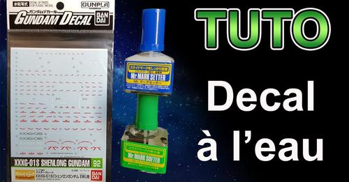

Review du HGUC Blue Destiny Gundam Unit 1 "exam"
Review du HGUC Blue Destiny Gundam Unit 1 "exam"
Retrouvez toutes mes impressions sur ce kit dans la vidéo ci-dessous :

Tuto 2.0 : la pose de décals à l'eau
Dans la vidéo ci-dessous, je vous explique comment procéder, avec quel matériel pour réussir pas à pas à poser vos décals :
